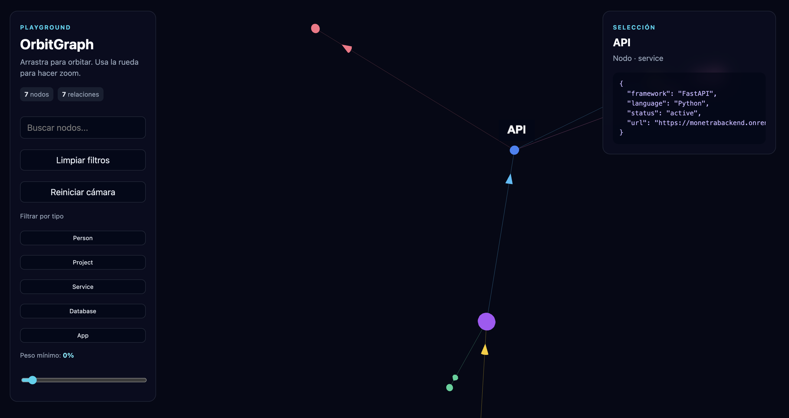
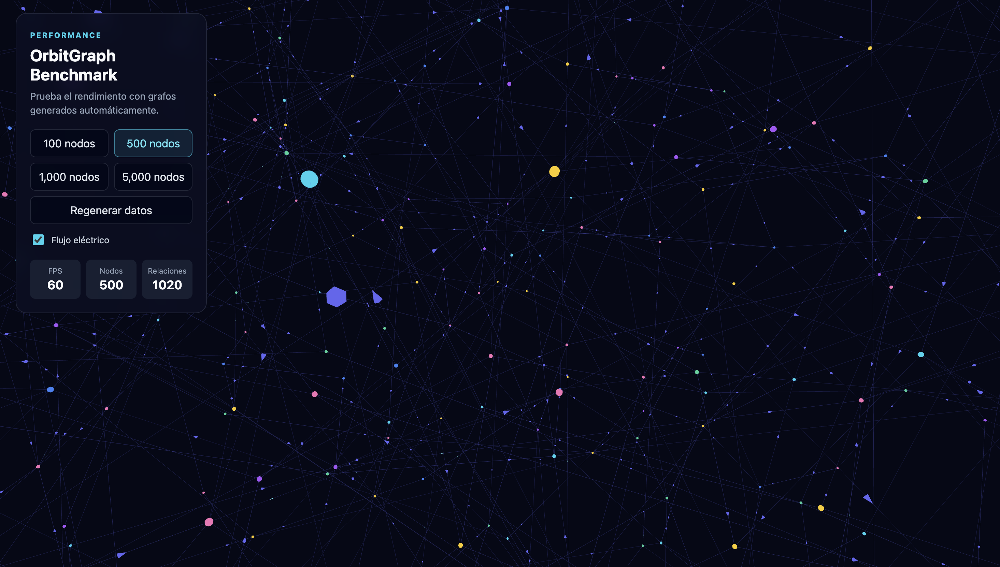

OrbitGraph is a TypeScript library for exploring complex relationship graphs in 3D.
It renders nodes and directed relationships as an interactive WebGL universe. It is intended for user networks, services, documents, events, organizations, dependencies, and knowledge graphs.

| Package | Purpose |
|---|---|
@orbitgraph/core |
Graph types and data utilities |
@orbitgraph/three |
Three.js/WebGL renderer |
@orbitgraph/react |
React component bindings |
npm install @orbitgraph/core @orbitgraph/three three
npm install @orbitgraph/core @orbitgraph/three @orbitgraph/react three
import { createOrbitGraph } from "@orbitgraph/three";
import type { GraphData } from "@orbitgraph/core";
const data: GraphData = {
nodes: [
{ id: "team", label: "Product Team", type: "group", color: "#22d3ee" },
{ id: "workspace", label: "Workspace", type: "resource", color: "#a855f7" }
],
links: [
{ source: "team", target: "workspace", type: "manages", weight: 1 }
]
};
const container = document.querySelector<HTMLElement>("#graph");
if (!container) {
throw new Error("Graph container was not found.");
}
const graph = createOrbitGraph(container, {
linkFlow: {
enabled: true,
maxParticles: 140,
particleSize: 0.09,
particleSpeed: 0.12
}
});
graph.setData(data);
OrbitGraph includes an interactive benchmark to evaluate rendering and layout performance with generated graphs of 100, 500, 1,000, and 5,000 nodes.

The benchmark includes an FPS counter, node and relationship totals, and an optional energy-flow toggle so you can compare visual quality against performance.
Run it locally from the repository root:
npm run build
npm run dev:benchmark
Open the local URL displayed by Vite, usually http://localhost:5173.
npm install
npm run typecheck
npm run test:run
npm run build
npm run dev
See examples/vanilla, examples/react, and examples/benchmark for working examples.
OrbitGraph is in early development.
MIT